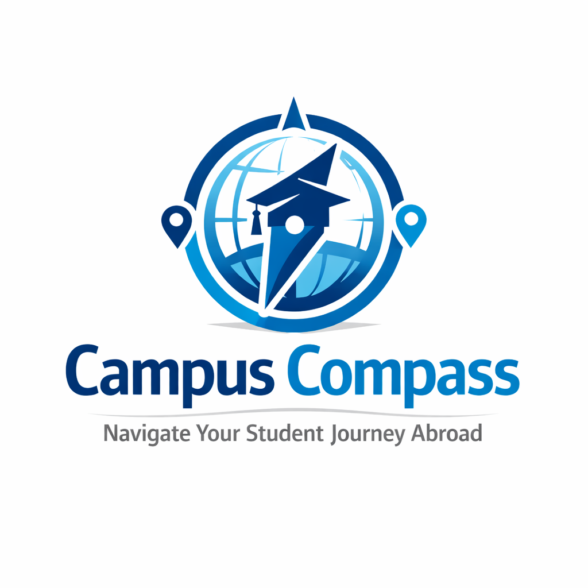

Campus Compass
A Guide for International Students to Navigate Life in Germany

Campus Compass provides international students with the tools, resources, and guidance they need to adapt to life in a new country.
Helping international students navigate housing, culture, studies, and everyday life with ease.
- Reliable accommodation information
- Transport and mobility guidance
- Student community
- Residence permit
Accommodation
Reliable information on housing options for international students: